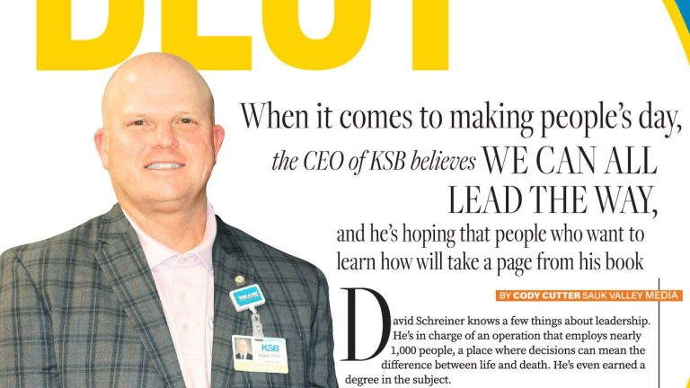

<article class="article-section">
  <div class="article-container">

    <!-- TOP SECTION: Image right, intro content left -->
    <div class="article-top">

      <!-- Left: Intro Content -->
      <div class="article-intro">
        <p class="article-lead">
          David Schreiner knows a few things about leadership. He's in charge of an operation that employs nearly 1,000 people, a place where decisions can mean the difference between life and death. He's even earned a degree in the subject.
        </p>
        <p class="article-byline">Originally published in Dixon Living Fall 2023</p>

        <p class="article-p">You could say he wrote the book on leadership. A little more than a year after the CEO and President of KSB Hospitals earned his doctoral degree in values-driven leadership, Schreiner has written "Be the Best Part of Their Day: Supercharging Communication with Values-Driven Leadership," a book that shares his approach to leadership and the philosophy behind it.</p>

        <p class="article-p">Published by Advantage Media (the book publishing arm of Forbes), it will be released Jan. 16, beginning with online sales on Amazon; preorders are scheduled to begin in late November. An audiobook also is planned.</p>
      </div>

      <!-- Right: Large Image -->
      <aside class="article-image-col">
        <div class="article-image-wrapper">
          
        </div>
      </aside>

    </div>

    <!-- FULL WIDTH: Rest of article content -->
    <div class="article-body">


      <p class="article-p">What led the way to adding "author" to his list of accomplishments? The book's title pretty much sums it up: He wants to help make people's day — and that, he said, can be accomplished through good leadership.</p>

      <p class="article-p">"We've all heard stories about 'one smile,' or 'one kind comment,' or, 'somebody held the door open for me,' and sometimes it gives people a little bit of hope, and that's really what this book is about. How do we do that more often?" he said. "If I have time to spend with my son, I want to make sure I make his day better. We can add that to the people we work with, people who you go to church with. Can you say something uplifting, as opposed to jumping in with a lot of negative communication that's out there — we hear a lot of that. Let's take the opposite of that and be the best part of someone's day."</p>


      <p class="article-p">In his book, Schreiner identifies 15 different ways to improve leadership skills through three topics. Included are stories and examples that he personally has seen through his work at KSB, as well as his research for his dissertation through five other hospitals and their administrations.</p>

      <p class="article-p">"The premise of the book is based on how we engage and connect personally and to do that better. How do we listen better, and how do we ask better questions?" Schreiner said. "Engaging with intent. Everything from small group and large group presentations, video, email, all of the different ways we connect that weren't available to us awhile ago. Then being mission focused and united in leadership. In our case, the hospital has a very specific mission and that's why we're here, and how do we keep that mission in the front of people's minds when we are making decisions?"</p>

      <p class="article-p">While Schreiner's experiences often involve interacting within a professional workplace, the concepts he details in his book also can apply to everyday situations. "If I can take these 15 things and go, 'Here are five that I'm doing well, here are five that maybe I think about once in a while, and five that I've never really considered' — and can I add more to that 'do well' list, or maybe bring one of those things that I'm not doing and maybe do it once in a while? The goal is to engage more effectively, and if these tips help with that, then the book did what it was supposed to do."</p>


      <p class="article-p">A native of Crawfordsville, Indiana, Schreiner's medical career began in 1986 as a radiology technician at Golden Valley Memorial Healthcare in Clinton, Missouri. He joined KSB in 1989 as its director of medical imaging, supervising its radiology department, and became President and CEO in 2011, having earned a master's degree in health services administration from the University of St. Francis in Joliet leading up to his appointment.</p>

      <p class="article-p">Schreiner also became a Fellow of the American College of Healthcare Executives during his hospital leadership, adding "FACHE" to his post-nominal collection of letters before adding a few more — Ph.D — in 2022 with a doctorate in philosophy. He added doctor to his list of accomplishments after successfully defending his dissertation through Benedictine University in Lisle, titled "What CEO Practices help Rural Hospitals engage Constituents in Volatile, Uncertain, Complex, and Ambiguous Times?"</p>

      <p class="article-p">The answer: Be engaged and connectible at a personal level from top to bottom in the workplace, and focus and invest in the community.</p>


      <p class="article-p">"CEOs of independent, rural hospitals face increasingly challenging times for their organizations and patient communities," Schreiner wrote to open the abstract of his dissertation. "The need to engage multiple stakeholders to sustain these hospitals is paramount. This inductive study explored how rural hospital leaders seek and maintain effective engagement with patients, employees, physicians, board members and community leaders."</p>

      <p class="article-p">Upon learning of his successful defense from his professors, he also took a piece of advice from them. Earning his doctorate has opened up opportunities for Schreiner to share his expertise, and not just locally. Fellow leaders from as far as Canada and Ireland have sought his expertise. That, in turn, led him to write his book.</p>

      <p class="article-p">"They said, 'We think you got something, and something unique that's not in the literature today,'" Schreiner said. "I wanted to take this to a broader audience. Not everybody wants to read 40 pages of academic articles, so I enjoyed writing the book."</p>


      <p class="article-p">Schreiner's determination to be a lifelong learner of all things leadership has made an impression on those he works with at KSB, including his chief of staff, Nancy Varga.</p>

      <p class="article-p">"It filters down through the executive team, and they embrace that same type of philosophy that's in the book," Varga said. "Certainly Dave is sharing it with our leadership team, and in turn, he pushes us to make sure that they share the same things with their departments. It's cascading, and blows your mind, too. It has definitely made a difference."</p>

      <p class="article-p">Board President David Hellmich, who's also president of Sauk Valley Community College, was pleased to see Schreiner's commitment to positive leadership. "As the Chair of the KSB Board of Directors, I want to emphasize how proud I and the other directors are of Dr. Schreiner for his many accomplishments, not the least of which is his upcoming leadership book," Hellmich said. "Dave has built a well-deserved national reputation as a thoughtful healthcare leader, and his book will help guide professionals as they navigate local challenges."</p>

      <p class="article-p">Schreiner has also served in a leadership role on several statewide boards and task forces focused on hospital and healthcare issues, including the Illinois Hospital Association. For 25 years, he's also been a member of the adjunct faculty at St. Francis, teaching graduate courses on healthcare administration. In 2007, he was honored with the prestigious Citizen of the Year award by Dixon Chamber of Commerce and Main Street.</p>


      <p class="article-p">Work isn't the only place where his leadership skills come in handy. Schreiner and his wife, Stephanie, live in Dixon and have two children, Kaile of Dixon and Andrew of Chicago, and two granddaughters, Klara and Nova.</p>

      <p class="article-p">"I think it works in a lot of different places," Schreiner said. "I've found that it works in my personal life, so when I work with family and when I work with friends, some of the same concepts that come across in the book also translate into better personal interactions."</p>

      <p class="article-p">"What I did was take my academic approach through my dissertation, and take those same concepts and add stories around it in my book," Schreiner said. "I was looking for ways that I could engage more completely, engaging by connecting and communicating with different groups — people I report to, which are the KSB Hospital Board of Directors; our colleagues; people here at work and our KSB family; people in the community; our physicians — and taking a look at that group and finding out how to communicate better."</p>

      <p class="article-p">What he found was a way to help people turn a page in their lives by turning a page in his own life, making the leap from academic to author and putting his approach to leadership into a book that he hopes will help today's readers become tomorrow's leaders.</p>

    </div>

  </div>
</article>